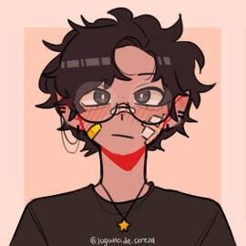

Amakara
DekuBaku Cookbook Zine
Amakara is a hybrid cookbook-zine project focused on Top!Izuku Midoriya and Bottom!Katsuki Bakugou dynamics within the Izuku Midoriya/Katsuki Bakugou pairing.
The Team
Hi, I'm Jay! I have a deep love for DkBk and can't wait to contribute to spread the DkBk love :)
Howdy! I'm Bee and I've been in and out of the fandom since 2021. Discovered the light of dkbk early on and it forever changed the trajectory of my life.
- Saddle Up: a BKDKBK Zine Writing/Beta Mod
- School's in Session: a Sensei Izuku Zine Head Mod
- It's Okay to Not Be Okay Head/Socials Mod
- Writer for other zines and events

Hi! I'm Becs and I have been a fan of my hero since 2014! I have always really loved Izuku and Katsuki's dynamic and their overall relationship is so important to me! I am very excited to join this project!
hi i'm dent. ive been a dkbk fan for two years, they're my favourite boys in the world! i love drawing them being goobers and love kacchan's canon cooking prowess so much
- ominous: a possessive deku dkbk zine : art mod
- daydreaming about us bkdkbk reverse bang : art & socials mod
- the cutest bang in the world tgck bang : art mod
- artist contributor for several zines

Hi, I'm Dawn, I love food of all kinds from all kinds of cultures and countries. I've also been reading MHA since my high school days so it's an honor to be a part of this project, I hope you will enjoy the finished cookbook just as much as we have enjoyed making it!
Loves to cook!! Fairly new to the fandom in general, but always happy to talk about its best boys!!
-
Interning here c: really looking forward to learning and creating with everyone!!
hi i'm rara ✿ i've loved kacchan and deku for so long, they're honestly my heroes! i admire kacchan's drive so much, and i'm so thrilled to get to mix two of my favorite things in the world: cooking and dkbk 🤝
hi hi! I’m Tayl and Ive been an MHA fan since 2016! I love dkbk and I love the creativity and passion of this fandom, im super excited to support this project - lets get cooking!
- SPARKS: A Trans BKDKBK Zine - Art Mod
- The Arena: A BKDKBK Zine - Formatting Mod
- The DKBK Fanwork Exchange - Organizational and Graphics Mod
- Explodo-Smash and Wonder Duo Days - Co-Head Mod and Founder
- graphics modding and organizational support on several zines and projects
- art contributor on several zines and projects
Project Timeline
Important schedules and milestones for our zine project production roadmap:
- July 2026: Launch
- August 2026: Interest Check
- October 2026: Contributor Application
Note: Dates are subject to change.
Frequently Asked Questions
- What is a zine?
A fanzine or zine for short (derived from "magazine") is a fan-created, fan-published booklet, in this case one which contains art and fanfiction. These projects are not officially endorsed by rightsholders. - What is DekuBaku/DkBk?
DekuBaku (DkBk) or IzuKatsu (IzKt) refers to a top/bottom dynamic between Izuku Midoriya and Katsuki Bakugou. DekuBaku means that in a NSFW context, Izuku should be giving while Katsuki is recieving. We will not put limits on how these dynamics are represented. Katsuki may be dominant, as long as he is still recieving, and vice versa with Izuku giving. In SFW works we simply ask that Izuku is not depicted with stereotypical uke characteristics or Katsuki with stereotypical seme characteristics. - Are other Izuku/Katsuki dynamics allowed?
As we are a fixed-dynamic project, we will not being allowing content outside of DkBk/IzKt. We are not negative towards other dynamics and will not judge for content created outside of the zine, but all creations for this project must be strictly DkBk. - Will fixed DkBks be prioritized?
The voting process will be blind and unbiased to remain fair to all applicants. Content outside of your application will not be factored when making our decision, including but not limited to follow count, online presence, zine experience, etc. - Can I apply as a contributor?
We will have contributor apps open for this project, yes! If you are reading this before or during the application window, you may find information about dates and application forms on our twitter or bsky. - Will there be a NSFW addon?
We would love to have one! The decision will be made after our interest check completes. - What are the rules for being a contributor?
You must be 18 years of age as of the date contributor sign-ups open to participate and submissions must be entirely your own work and may not use generative AI in any part of the creation process. - Is this project for charity or profit?
This will be decided after our interest check has concluded! Stay tuned! - What kind of contributors are you looking for?
We would like to bring on page artists, spot artists, merch artists, writers, and chefs. To be confirmed after the interest check. - What do you mean by hybrid?
Hybrid for us means a zine and a cookbook as one book. Writers and artists will collaborate with a chef to create a piece that goes along with the recipe crafted. More information is to come after our interest check.